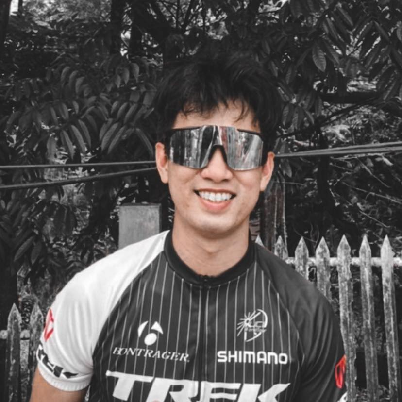

About Me

Hi! Im Naz, based here in Philippines. As a dynamic and dedicated junior developer, I bring nearly two years of hands-on experience in the realm of web development. My expertise shines particularly bright in the world of front-end development, where I have become a proficient user of cutting-edge technologies such as ReactJS and Next.js. My familiarity with TypeScript adds an extra layer of robustness to my projects, ensuring clean and maintainable code.
Projects
- Netflix (Movie Trailers): Netflix (Movie Tailers) app is a simplified version of Netflix, offers a vast collection of movies, TV shows, documentaries, and original content across a wide range of genres.
- Pokedex: Pokedex is collection depicts existed Pokemon library, basic info, abilities, basic stats, habitats, Types, Evolution etc.
- Snake and Ladder: Snake and Ladder is a board game where players roll dice, move their game pieces, and aim to reach the final square while avoiding snakes that push them backward and utilizing ladders that help them advance quickly. The first player to reach the final square wins.